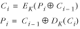

15.4 DES Example: Block Cipher
Modes
Most block
ciphers, such as DES, encipher
and decipher data in 64-bit blocks. Since nearly all of the
work done with ciphers involves more data than this, we end up
invoking the cipher over and over again to process all of the
blocks. The specific manner in which a block cipher is invoked
repeatedly is called a block cipher
mode.
The simplest way to process several blocks of
data is to append each block of ciphertext we generate to
others generated before it. This primitive approach is called
ECB, or electronic
code book. Its simplicity makes it very popular, but it
is relatively insecure. Its main problem is that for any given
key, a specific block of plaintext always enciphers to the
same block of ciphertext wherever it appears in the data. This
means that if an adversary cracks even a small section of the
data, he can begin to develop a code book for cracking other
sections as well. A better approach is CBC, or cipher
block chaining.
CBC mode avoids the problems of ECB by
augmenting a block cipher with simple operations and feedback.
Feedback makes each block of ciphertext depend in some way on
actions performed earlier. In CBC mode, previous blocks of
ciphertext serve as feedback so that even the same block of
plaintext is likely to encipher into a different block of
ciphertext each time it appears.
For previous blocks of ciphertext to serve as
feedback, before we encipher a block of plaintext, we XOR it
with the block of ciphertext generated before it. When we
decipher the ciphertext, we XOR each deciphered block back
with the block of ciphertext it follows. Simply stated:

where Ci and
Pi are the i th blocks of ciphertext and
plaintext from buffers C and
P, and EK and DK are the encipher and decipher
operations using key K.
Usually we add one random block of data to
the beginning of the plaintext. This is so that even when an
adversary has some idea what the first block of plaintext
contains, it cannot be used to start replicating the chaining
sequence. This block is called the initialization vector. We encipher it normally, without any
feedback, then use it as the feedback when enciphering and
deciphering the first real block of plaintext.
Example
15.3 presents an implementation of two functions, cbc_encipher and cbc_decipher, that encipher and decipher a
buffer of data using DES in CBC mode. The cbc_encipher function takes a buffer
of plaintext containing size bytes and
enciphers it using key as the key. It assumes
that the first block of plaintext is actually the 64-bit
initialization vector. The cbc_decipher function takes a buffer
of ciphertext containing size bytes and
deciphers it using key as the key. For
symmetry, the initialization vector is deciphered as well and
is returned as the first block of plaintext.
The runtime complexities of cbc_encipher and cbc_decipher are both O (n),
where n is the number of blocks
enciphered or deciphered. This is because the two functions
simply call the O (1)
operations des_encipher and
des_decipher, respectively,
once for each block.
Example 15.3.
Implementation of Functions for DES in CBC Mode /*****************************************************************************
* *
* --------------------------------- cbc.c -------------------------------- *
* *
*****************************************************************************/
#include <stdlib.h>
#include "bit.h"
#include "cbc.h"
#include "encrypt.h"
/*****************************************************************************
* *
* ----------------------------- cbc_encipher ----------------------------- *
* *
*****************************************************************************/
void cbc_encipher(const unsigned char *plaintext, unsigned char *ciphertext,
const unsigned char *key, int size) {
unsigned char temp[8];
int i;
/*****************************************************************************
* *
* Encipher the initialization vector. *
* *
*****************************************************************************/
des_encipher(&plaintext[0], &ciphertext[0], key);
/*****************************************************************************
* *
* Encipher the buffer using DES in CBC mode. *
* *
*****************************************************************************/
i = 8;
while (i < size) {
bit_xor(&plaintext[i], &ciphertext[i - 8], temp, 64);
des_encipher(temp, &ciphertext[i], NULL);
i = i + 8;
}
return;
}
/*****************************************************************************
* *
* ----------------------------- cbc_decipher ----------------------------- *
* *
*****************************************************************************/
void cbc_decipher(const unsigned char *ciphertext, unsigned char *plaintext,
const unsigned char *key, int size) {
unsigned char temp[8];
int i;
/*****************************************************************************
* *
* Decipher the initialization vector. *
* *
*****************************************************************************/
des_decipher(&ciphertext[0], &plaintext[0], key);
/*****************************************************************************
* *
* Decipher the buffer using DES in CBC mode. *
* *
*****************************************************************************/
i = 8;
while (i < size) {
des_decipher(&ciphertext[i], temp, NULL);
bit_xor(&ciphertext[i - 8], temp, &plaintext[i], 64);
i = i + 8;
}
return;
}
|